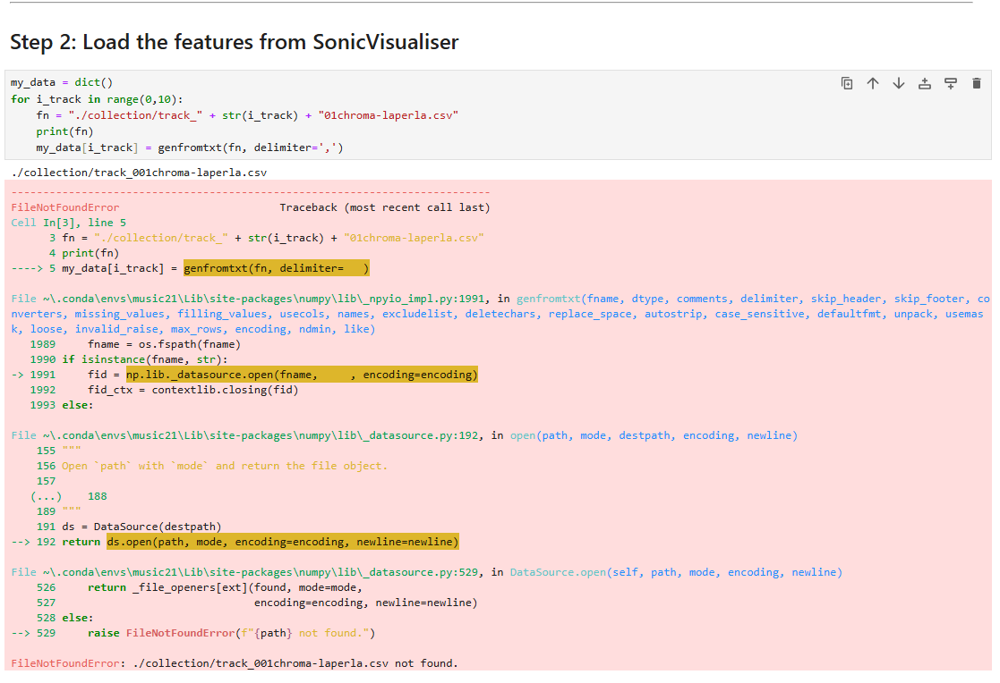
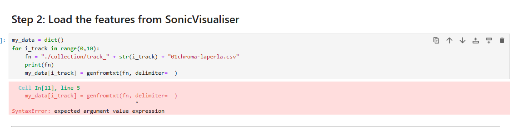
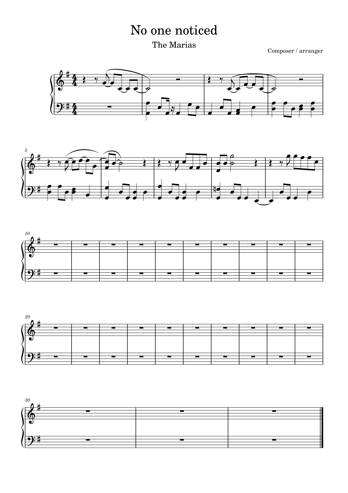
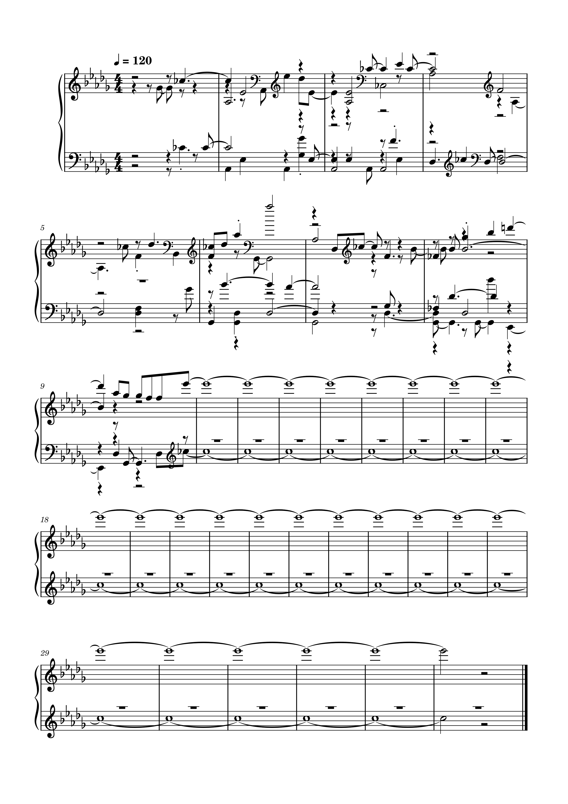

For this task, I used the university lab computers which had the software already installed. I attempted the task by following the instructions; extracting the specified files and placing them in my jupyter notebook. I proceeded to open the collection folder and placed my track (CSV file) in to complete the following task, which was to go through the notebook using my track. Unfortunately, this did not work for me after several attempts, going back and forth to try and fix the errors (shown below), however I could not get it to work properly.




The notes for the original score have been transcribed according to the original notes themselves, therefore when listening to the score within the software musescore, it plays smoothly and sounds very similar to the original track. I went through the process of exporting the score as a WAV file, then opening the file in sonic visualiser and transcribing the file through the Polyphonic transcription feature. I then proceeded to open the new file in musescore again, which resulted in a very different looking score. With the two scores side by side, there are obvious visual differences within the notes. The modified MIDI file has scattered notes throughout the bars, along with unorganised formats of notes and other symbols, such as clefs, keys and time symbols.